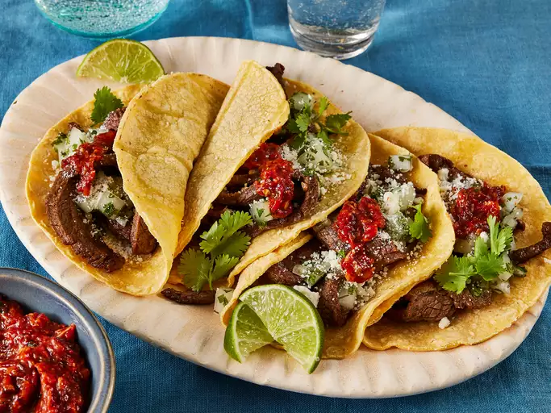

Taqueria Style Tacos

Description:
These carne asada tacos made with tender strips of flank steak, served on soft corn tortillas are as good as you get at a taqueria. So delicious topped with onion relish and homemade tomato salsa!
Ingredients:
Marinade:
- 1⁄2 cup soy sauce
- 1⁄2 cup olive oil
- 1⁄3 cup white vinegar
- 4 cloves garlic, minced
- 2 limes, juiced
- 1 teaspoon salt
- 1 teaspoon ground black pepper
- 1 teaspoon ground white pepper
- 1 teaspoon garlic powder
- 1 teaspoon chilli powder
- 1 teaspoon dried oregano
- 1 teaspoon ground cumin
- 1 teaspoon paprika
Onion Relish:
- 1 white onion, chopped
- 1⁄2 cup chopped fresh cilantro
- 1 lime, juiced
Salsa:
- 4 dried New Mexico chile pods
- 2 large tomatoes, chopped
- 1 white onion, quartered
- 4 cloves garlic, peeled
- 2 jalapeno peppers, chopped
- 1 pinch salt and black pepper
Other:
- 1 (32 ounce) package corn tortillas
- 2 cups grated cotija cheese
- 2 limes, cut into wedges
Directions:
- Lay flank steak in a large glass baking dish.
- Make the marinade: Whisk soy sauce, oil, vinegar, 4 cloves of garlic, juice of two limes, salt, black pepper, white pepper, garlic powder, chili powder, oregano, cumin, and paprika together in a bowl until well blended; pour over steak, turning to coat both sides. Cover the dish with plastic wrap and marinate in the refrigerator for 1 to 8 hours.
- Make the relish: Stir onion, cilantro, and lime juice together in a small bowl. Set aside.
- Make the salsa: Preheat the oven to 450 degrees F (230 degrees C). Heat a skillet over medium-high heat. Add chile pods and toast for a few minutes; transfer pods to a bowl of water and soak for 30 minutes.
- Place tomatoes, 1 onion, 4 cloves of garlic, and jalapeños onto a baking sheet. Roast in the preheated oven until vegetables are toasted, about 20 minutes.
- Transfer vegetables into a blender or food processor. Add soaked chiles, salt, and pepper; puree until smooth.
- Remove steak from the marinade and shake off excess. Discard the remaining marinade. Cut the marinated flank steak into cubes or strips. Heat vegetable oil in a large skillet over medium-high heat. Add steak; cook and stir until cooked through and most of the liquid has evaporated.
- Warm tortillas in a dry skillet over low heat for about a minute on each side.
- Place some steak on each tortilla; top with relish and prepared salsa. Sprinkle with cotija cheese. Garnish with lime wedges and serve.
Home